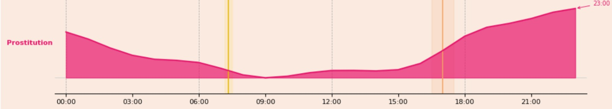

SF Crime: Two Decades of Data
Scroll down to explore how crime evolves across time, geography, and human behavior patterns.

Interactive Chart
Crime Map

Scroll down to explore how crime evolves across time, geography, and human behavior patterns.